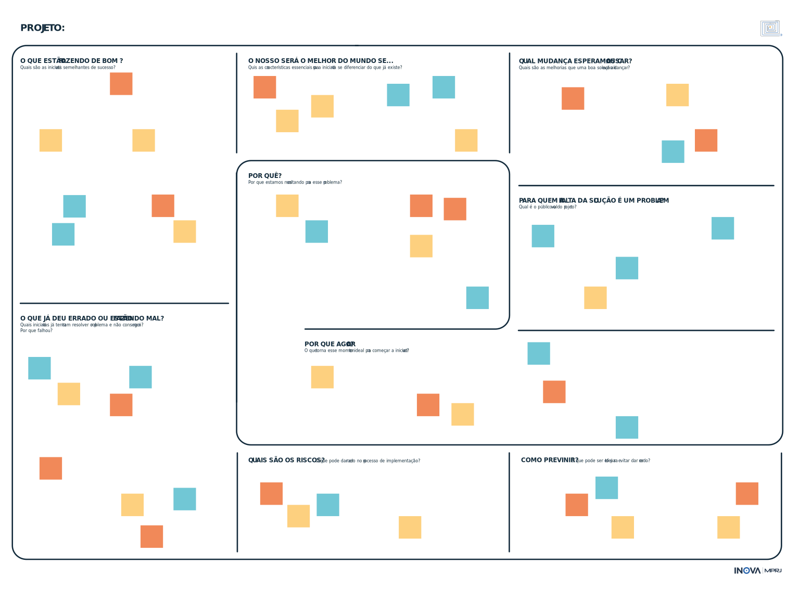

Hoje, o Fluxo de Transformação é o método de trabalho utilizado nos projetos liderados pelo Inova_MPRJ. Foi criado para ser testado como proposta de desenvolvimento de um novo processo de trabalho que possa ser replicado por todo e qualquer órgão de governo e de controle.
O Fluxo de Transformação propõe caminhos detalhados e otimizados para qualquer iniciativa que busque conhecer e resolver problemas sociais. A trilha azul direciona esforços para a abertura de dados e para o monitoramento de problemas graves, buscando compreender profundamente a realidade que pretende mudar. A laranja olha para o que já foi feito, constrói alternativas adaptadas aos contextos locais e testa intervenções com rigor.
Priorizar desafios nesta trilha é um pouco mais natural. Em regra, ela explora desafios já monitorados, mensurados, e com necessidades de intervenção identificadas. Em outras palavras, é mais fácil agir a partir de alertas que denotam situações alarmantes.
A entrada na trilha laranja poderá ser consequência dos alertas gerados pela trilha azul. Ou seja, da variação alarmante dos indicadores chaves já monitorados ou da sinalização da não produção de dados que acompanhem algum elemento relevante da agenda.
Antes de cada projeto começar, o Inova_MPRJ já sabe qual das duas trilhas ele seguirá. Depende da natureza do desafio. Se for de monitoramento e priorização, caminhará pela trilha azul. Caso envolva iniciativas de intervenção, seja na atividade-meio ou fim, irá para a trilha laranja.
Ela não é, contudo, necessariamente proveniente de tais alertas. Outras fontes também podem evidenciar problemas que necessitam de intervenção.
O desenvolvimento do sistema de gerenciamento de investigações Integra Extrajudicial é um exemplo de desafio pertinente à trilha laranja. Nesse caso, ligado à atividade-meio do MPRJ. Estudos internos comprovaram a necessidade da iniciativa: o modelo anterior era lento, custoso e limitado para realizar análises relevantes.
Todos os processos de trabalho do Inova_MPRJ começam refletindo criticamente sobre a definição e o entendimento prévio quanto a potenciais problemas ou soluções. Por isso, ambas as trilhas passam pelo mesmo percurso inicial, cujo objetivo é redefinir desafios.
É contra-intuitivo pensar em reformular perguntas que parecem fazer sentido ou ideias de soluções já cristalizadas. Essa é, contudo, uma das grandes contribuições que o design de serviços pode trazer para o setor público. Ter certeza de que se está buscando resolver o problema certo é tão ou mais importante do que encontrar a sua solução.
Antes de mais nada, o Inova_MPRJ elabora o Pontapé Inicial (PPI), o primeiro documento formal do projeto. Ele contém:
O principal objetivo do PPI é anunciar internamente a intenção de trabalhar com o tema, evitando retrabalhos e sobreposições. O documento também serve para contextualizar possíveis interessados em fazer parte do time.
O time é o grupo multidisciplinar alocado para cada projeto. Os participantes se comprometem com todo o planejamento e execução – recebendo treinamentos para tanto ao longo do caminho
É importante entender o que está sendo feito a respeito do tema e abrir espaço para a participação de quem desejar. Para tanto, o Inova_MPRJ encaminha, junto do PPI, um formulário com tais indagações para todos os órgãos da Administração e promotores com atribuição.
É preciso conhecer melhor o contexto do desafio, antes de iniciar a exploração de um terreno desconhecido. Nesse momento, portanto, é importante conversar com os proponentes, ir a campo e fazer uma rápida pesquisa de mesa. É hora de entrar em contato com o que já existe a respeito, termos técnicos e documentos importantes relacionados ao tema.
As visitas iniciais a campo servem para explorar, ainda que superficialmente, a realidade que o projeto deseja mudar. A ideia é, em um ou dois dias, junto aos gestores da ponta, coletar as informações mais relevantes e captar suas visões.
O reconhecimento do terreno é também a primeira oportunidade de contato com especialistas da área, com os dados existentes e com os sistemas de tecnologia da informação utilizados. Os especialistas podem se tornar parceiros e as bases de dados serão insumos essenciais para as fases seguintes.
Em paralelo, separa-se tempo de trabalho para sistematizar os primeiros aprendizados e organiza-se a documentação para o site, que será construído nas etapas seguintes, e para o futuro relatório do projeto. O intuito é criar a cultura de produzir conteúdo de comunicação ao longo de todo o percurso. Assim, as últimas fases não ficam sobrecarregadas.

O Inova_MPRJ envia convites aos interessados para participação nas etapas seguintes. O time ainda não está definido nesse momento.
Os interessados - ainda não comprometidos oficialmente - realizam uma reunião de trabalho para explorar a questão colaborativamente. Em atividade conduzida pela equipe de design do Laboratório, o grupo trabalha para responder perguntas-chave do processo de redefinição do desafio.
Esta etapa busca alinhar as diferentes visões sobre o desafio, consolidar uma visão comum entre os envolvidos e garantir que nenhuma questão relevante fique de fora do escopo do planejamento. O canvas “Redefinindo o Desafio”, serve como guia para o grupo alcançar esses objetivos.
Como de praxe, o Inova_MPRJ e os participantes registram as principais conclusões e aprendizados na minuta de relatório do projeto. Serão informações importantes para montar o Plano de Trabalho ao final da fase de Redefinição do Desafio.
É um exercício de identificação de atores e de seus possíveis graus de envolvimento com a iniciativa. O grupo cumpre esta etapa ao preencher outro canvas – “Mapa de Atores” –, também colaborativamente.
Este mapeamento, também liderado pela equipe de design do Inova_MPRJ, é inicial e certamente sofrerá alterações ao longo da trajetória. No entanto, trata-se de um importante ponto de partida para a fase de mobilização de atores externos.
O “Mapa de Atores” parte do desafio para imaginar quem poderá se relacionar direta ou indiretamente com o projeto. Valem atores internos e externos ao MPRJ. Uma parte dos atores é categorizada como “fixa”, considerando que participará da maior parte das etapas. Enquanto outros serão ocasionais, contribuindo em pontos específicos do trajeto.
A proposição e a validação do cronograma devem ser realizadas em grupo, também neste momento. Todos assinam documentos formalizando suas participações e incluem o cronograma no Plano de Trabalho, o segundo documento oficial do projeto. A data de início do cronograma ocorre sempre após a fase de redefinição do desafio, quando o projeto é lançado oficialmente.

mapa de
atores
Com o desafio melhor definido, os participantes das fases anteriores decidem se comprometer ou não como projeto. A leitura atenta deste relatório é essencial para os interessados ajustarem suas expectativas. Após o fechamento do time, todos seguirão a trilha até o final.
No MPRJ, o time pode ter diversas configurações – a depender das características de cada desafio. Um exemplo de formação mínima envolveria um promotor, um técnico administrativo, um assessor jurídico, dois técnicos periciais do GATE, dois analistas da CSI (quando houver pertinência temática) e dois servidores convidados.
O time envia o Plano de Trabalho para validação da Chefia Superior. A partir da aprovação, o time define o nome do projeto e conta com a colaboração do Inova_MPRJ para criar sua identidade visual e um modelo de relatório para posterior publicação na web.
Entre as informações básicas do Plano de Trabalho estão: o tema do desafio, a trilha que seguirá, a previsão de conclusão e a data de lançamento. Além delas, o time detalha o desafio, o escopo do experimento, os parceiros com suas responsabilidades e o próprio cronograma no formato de diagrama de Gantt.
Também é momento de pensar na melhor dinâmica de trabalho para o grupo e estabelecer os passos da fase seguinte, de aprofundamento.
canvas "Redefinição do desafio"
Nesse momento, o time também cria um repositório no GitHub, seguindo a estrutura adaptada pelo Inova_MPRJ do Team Data Science Process , da Microsoft. O time preenche as informações até então disponíveis da Carta de Experimento.

Ao longo da trajetória, os times irão treinar e aplicar as habilidades da caixa de ferramentas. Para tanto, o Inova_MPRJ enviará referências de cursos de ensino à distância (EAD), guias e tutoriais. Além disso, promoverá encontros presenciais para discussão e organizará grupos de estudo.
Os times se dividem para explorar ferramentas complementares. Isso traz eficiência para a resolução prática dos desafios. Os elementos da caixa de ferramentas aparecem ao longo das etapas, na medida em que forem úteis para solucionar as dificuldades impostas por cada momento.
O mais importante é ir além do modelo tradicional e teórico em que só o professor fala. A imagem precisa ser mais a da bancada de oficina e menos a da sala de aula. Ou seja, todos debruçados sobre as engrenagens daquilo que se precisa entender como funciona. A ideia e a prática de treinamentos no trabalho visam a captar essa essência.


Há um enorme potencial para solucionar desafios complexos de governo quando se abre caminho para a inteligência coletiva. Essa é a promessa da inovação aberta, processo que subverte a lógica tradicional de muitas decisões e compras governamentais. Ao invés de especificar a solução desejada, o órgão público define o desafio e o resultado esperado, garantindo à sociedade - Academia, empresas, startups etc. - a oportunidade de cocriar soluções inovadoras.
Para ampliar sua visão sobre o problema e redefinir o desafio que o Impacta buscava enfrentar, em dezembro de 2019 a equipe do Inova_MPRJ realizou uma sessão de canvas.
Com isso em mente, em outubro de 2019, o Inova_MPRJ iniciou o desenho de um experimento relacionado à criação de um programa de inovação aberta para o MPRJ. Como descrito em seu anúncio, o propósito inicial do programa, posteriormente denominado Impacta, seria buscar parcerias para a construção e implementação de soluções custo-efetivas para desafios de governo, explorando a inteligência coletiva e estimulando a construção e o fortalecimento de redes de inovação.
Algumas ideias provenientes da sessão foram a necessidade de modificar o alcance do projeto (de desafios de governo para desafios do setor público), a necessidade de aprimorar o desenho do programa para estabelecer relações com outros programas de inovação aberta e a necessidade de investir na possível contratação de um parceiro, para gerenciar a maior parte das atividades do Impacta, que sobrecarregariam o Laboratório.
Os integrantes do Laboratório e os convidados Heleno Ribeiro Nunes, promotor de justiça do MPRJ integrante do projeto Fagulha, e João Arthur Reis, Diretor da Secretaria de Inovação do Estado de São Paulo - que participaram da sessão via videoconferência -, buscaram discutir questões como o por quê do programa; as mudanças que dele poderiam resultar; iniciativa de sucesso semelhantes e os riscos envolvidos.
Levantamento dos possíveis parceiros
Redirecionamento do projeto
Visão ampla do desafio
O time mobiliza os atores com o objetivo de fazer propostas específicas de contribuição a cada um deles. Quem aceitar participar assina documento que detalha seu envolvimento. É essencial haver clara compreensão de quem conta com quem e para que ao longo do projeto.
O canvas “Mapa de Atores”, preenchido na fase de redefinição do desafio, é o ponto de partida para esta etapa de mobilização.
Trata-se de trabalhar com políticas públicas informadas por evidência. Não apenas no momento de revisar sistematicamente a literatura, mas na hora de avaliar a própria iniciativa e também na hora de desenhar experimentos – de modo a propor implementações que facilitem avaliações fidedignas de seus impactos.
Portanto, o time coordena atividades de pesquisa de melhores práticas, revisando a literatura de intervenções com evidências de impacto positivo. Os métodos para pesquisar são variados e há muitas organizações com grande expertise no assunto. É uma ótima oportunidade de participação do Centro de Pesquisas do MPRJ (CENPE), da Academia e de organizações do terceiro setor, como o Instituto Veredas.
Partimos do princípio de que boas decisões devem ser tomadas com base nas melhores evidências de impacto disponíveis. Conhecer iniciativas que funcionaram no Brasil e no mundo é mandatório para propor alternativas com boa chance de custo-efetividade. Sempre lembrando de adaptá-las aos diferentes contextos.
Secretarias de governo e seus gestores serão novamente convidados a participar ativamente. Como sempre, a primeira opção é pelo trabalho em parceria. Afinal, a transparência ativa deve ser de comum interesse aos órgãos de controle e aos bons gestores.
Fase semelhante à mobilização de atores realizada no fluxo azul. Com base no mapa de atores, o time continua identificando especialistas no tema, no Brasil e no exterior. O intuito é contar com suas colaborações, seja envolvendo-os diretamente em todas as etapas, seja em participações pontuais.
Em alguns casos, o estudo de usuário é feito por meio de simulações, envio de questionários ou entrevistas. O time conduz as entrevistas e levanta dados que podem contribuir para quantificar a gravidade dos problemas tratados.
O time coordena, junto com a equipe de design do Inova_MPRJ, a ida a campo ou o estudo do usuário em outros ambientes. Fundamentos da pesquisa etnográfica podem trazer inspirações para novas soluções ou adaptação de ideias que já funcionaram.
O conhecimento de experiências promissoras ou que já funcionaram, adquirido na etapa anterior, é importante pois direciona o olhar. O estudo de campo e ou de usuário é etapa necessária e complementar para a conclusão da fase de aprofundamento.
A etapa de geração e seleção de alternativas prevê a reunião do time para uma atividade envolvendo ferramentas de design. A essa altura, os integrantes já conhecem os estudos baseados em evidências existentes e já foram a campo junto dos especialistas. O objetivo dessa etapa é utilizar a inteligência coletiva para, com o insumo das etapas anteriores, criar opções de intervenção e selecionar a(s) melhor(es) alternativas para solucionar o desafio.
Como os outros loops do fluxo, o da fase "Sessão de Ideias" indica que talvez seja necessário passar pelas etapas mais de uma vez ou revisar etapas anteriores.
É possível que em algum momento se perceba que a ideia escolhida não está solucionando o problema. Nesses casos, voltamos para a fase de geração e seleção de ideias, até que alcancem resultados satisfatórios.
Antes de decidir como prototipar as ideias e qual nível de fidelidade escolher, é importante entender em qual estágio de evolução a ideia está e quais são os atributos que queremos testar.
A partir dessas experiencias e do seu aprimoramento, podemos passar para protótipos de alta fidelidade. Imprimir objetos na impressora 3D, criar versão beta de um site, são alguns exemplos de como isso pode ser feito.
Existem diferentes formas de conduzir uma sessão de ideação. Costumamos em um primeiro momento fazer um toró de ideias (brainstorm). O objetivo é gerar o maior número de ideias possível, sem, inicialmente, levar em conta a viabilidade ou a qualidade delas. Todas são anotadas individualmente em post-it na plataforma Miro, que possibilita uma interação online em tempo real. É importante a separação de uma ideia por post-it para que depois elas possam ser agrupadas ou reorganizadas.
Devido ao grande volume de conteúdo gerado nessa atividade, o próximo passo é analisar as ideias e priorizar quais devemos investir e em qual ordem fazer esse investimento. Para isso, pode-se usar matrizes de custo x valor. Levando em consideração o custo de implementar a ideia e o valor que ela gera para a população. Ou votações que permitam priorizar as ideias de acordo com critérios pré estabelecidos. Os critérios podem ser tempo necessário para o desenvolvimento, acesso a quem pode implementar a ideia, tecnologias disponíveis, entre outros.
Nessa etapa, o time e os parceiros constroem o protótipo de intervenção ou desenham as diretrizes do programa para testá-lo com os usuários finais.
O objetivo do protótipo é permitir que o usuário entre em contato com a ideia e possa testá-la e assim possa contribuir com sua visão. A cada novo teste aprendemos como torná-la melhor para o nosso usuário.
Existem dois tipos principiais de protótipos: os de baixa fidelidade e os de alta fidelidade. De modo geral, os protótipos de baixa fidelidade são construídos quando as ideias ainda estão em sua fase embrionária. Podemos usar massinha para testar o formato de um objeto; encenação para simular a experiência de um serviço; peças de Lego para criar maquetes de espaços físicos.
O time testa a intervenção ou o produto gerado com os usuários observando o uso e anotando comentários para aprimorá-los. É importante ressaltar que quando falamos do teste com o usuário, não estamos falando somente dos usuários finais.
É importante testar também com as pessoas responsáveis pela implementação e manutenção do serviço. Afinal elas estarão lidando diariamente com o produto. Uma iniciativa de sucesso deve considerar tanto a população, quanto os servidores responsáveis pela entrega do serviço e/ou produto e os processos internos da organização.
Nos testes com o usuário sempre atentamos para não direcionar o uso e para simular ao máximo possível como seria a interação da pessoa com o objeto testado se não estivéssemos presentes. Além dos comentários, observar o modo como a interação acontece e a expressão corporal é muito valioso e pode dar muitas pistas de o que não está funcionando.
Filmar ajuda a registrar e permite que possamos retornar e observar novos pontos. Outro foco de observação são as "gambiarras" que o usuário está utilizando para adaptar o produto. Elas evidenciam necessidades que não estão sendo atendidas.
Sempre é possível retornar à priorização, seja porque descobrimos novas informações, ocorreu uma mudança na circunstância na qual o projeto estava sendo desenvolvido ou identificamos questões antes não levadas em consideração.
Após elencar, chega a hora de materializar a ideia priorizada em um protótipo e testá-lo tanto com o usuário final com as pessoas responsáveis por implementá-lo. Um protótipo é a forma de materializar ideias. Ele ajuda a pensar, mas também testar hipóteses, aprender novos usos possíveis, pontos que precisam ser melhorados e avançar com a solução.
A ordem de priorização é registrada inicialmente em uma tabela com campos destinado ao posicionamento no ranking, o nome da ideia e uma breve descrição. Esse material pode ser depois transformado em um infográfico ou similar para melhor comunicação e compartilhamento da informação.
O uso da inteligência coletiva é novamente muito importante. Quanto mais informada é a análise das ideias, melhor será feita a priorização. Podemos nos informar a partir de estudos, levantamento de dados, mas também convidando especialistas no assunto para ajudar na priorização. O conhecimento somado desses atores possibilita que tenhamos uma visão mais completa da situação e escolhamos a ideia que melhor se adequa ao objetivo do projeto.
Para alguns projetos, pode não ser possível prototipar e realizar testes com usuários. Por exemplo, quando não houver parceria com o Executivo (para projetos relacionados à atividade-fim do MPRJ). Contudo, tornar as ideias tangíveis a partir de protótipos e testá-las com o usuário antes da implementação é uma das prioridades do Inova_MPRJ.
O Integra Extrajudicial (IntegraX) é o protótipo do novo sistema de gerenciamento de investigações do MPRJ que o Inova_MPRJ desenhou a visão de produto e guiou o desenvolvimento. O principal aprendizado foi a importância do design de serviços durante o processo, envolvendo sucessivos testes do produto e envolvimento direto dos usuários.
O time aprimorou o produto com dois testes de usabilidade do protótipo. O primeiro foi um teste longitudinal, por meio de uma promotoria piloto, que se tornou a primeira livre do papel. A promotoria implementou o sistema e ia reportando dificuldades e erros durante 3 meses.
Os aprendizados dessa última atividade ajudaram a priorizar o desenvolvimento e refinamento de funcionalidades da plataforma para que ela pudesse substituir o sistema atual.
Os participantes foram instruídos a executar uma série de tarefas usando o IntegraX. Durante a atividade, eles anotaram o processo, descrevendo o que acharam interessante no novo sistema e tarefas que tiveram dificuldade de realizar.
O segundo, usando um grupo focal de oito promotores e quatro técnicos, integrantes de órgãos que trabalhariam com o sistema diariamente, inclusive a Corregedoria-Geral e o Conselho Superior.
Priorização da ordem de desenvolvimento das funcionalidades
Mapeamento dos pontos que necessitavam melhorias
Na hora de desenhar a estratégia de implementação, é essencial trazer novamente à tona o pensamento sobre políticas públicas baseadas em evidência e avaliação de impacto. A robustez das avaliações subsequentes e o maior grau de confiança estão diretamente relacionados à forma pela qual a intervenção é planejada.
É momento de desenhar uma estratégia de implementação e teste da intervenção que permita avaliar seus reais impactos, assim provando o seu valor e facilitar a replicação no futuro. Para tanto, o Inova_MPRJ encaminha referências importantes de EAD sobre políticas públicas informadas por evidências e conta com a colaboração de parceiros com vasta expertise no assunto.
Destaque para o CENPE, que tem nesse tema o foco principal de sua expertise. Por essa razão, será ideal que o time tenha, sempre que possível, um dos representantes do CENPE presente ao longo do projeto. Os métodos possíveis são, dentre outros, seleção aleatória, variáveis instrumentais, regressão descontínua, diferenças em diferenças e pareamento. Além disso, há novas oportunidades para explorar inferências causais usando aprendizado de máquina.


Elaboração do documento
Teste da intervenção
Desenho da estratégia
Ao final o time elabora o documento “Plano de Implementação do Protótipo”.
Assim como no fluxo azul, a transformação em relatório e o registro incremental dos documentos, códigos e resultados no GitHub ocorrem naturalmente. Todos os eventos e aprendizados foram documentados ao longo da jornada.
O time sistematiza as etapas em formato de relatório – em formato HTML (site). Os objetivos são os mesmos: atingir o público especializado e gerar base documental para peças de negociação e contencioso judicial, caso necessário.
Os relatórios também servem para gestão do conhecimento, já que registram detalhadamente o que foi feito e os aprendizados da jornada. São adicionados às campanhas de comunicação para servir de apoio a quem quiser replicar a iniciativa ou aperfeiçoá-la.
As iniciativas do fluxo laranja também são vinculadas a campanhas de comunicação. Nos casos em que a trilha laranja ocorrer como consequência de um alerta da trilha azul, as novas informações retroalimentarão a campanha criada anteriormente – contando a história de sucesso da intervenção e apoiando seu reuso.
Não havendo parceria com o Executivo, a campanha servirá para mostrar a todos os interessados e ao Poder Judiciário que a omissão na correção do problema é inescusável. O projeto demonstrou que o problema existe e que há soluções custo-efetivas, que funcionaram em algum lugar, capazes de solucioná-lo.
Se houver contencioso judicial, o site da campanha vai sendo atualizado com os andamentos e decisões do processo.
Havendo implementação da solução, seguem-se as atividades de avaliação e monitoramento, com novos estudos para identificar os efeitos da intervenção no curto, médio e longo prazo. Sempre atualizando o website da campanha de comunicação.
A parte mais essencial da avaliação já aconteceu: a definição da estratégia de implementação da intervenção e de seu monitoramento. O monitoramento é possível porque a estratégia inclui arranjos de infraestrutura para coleta e visualização de dados.
Esta é a versão 1.0 do Fluxo de Transformação. O Inova_MPRJ pretende continuar testando suas premissas na prática, tanto nos projetos em andamento quanto naqueles que iniciar ao longo de 2020. Nosso maior entusiasmo está em compartilhar o fluxo como uma plataforma de aprendizado conjunto e debates.
Sabemos que um desafio será não intimidar o usuário do método. Não custa lembrar: o fluxo, em todas as suas etapas, foi idealizado para o trabalho em equipe, com divisão de tarefas. Para facilitar, construímos ferramentas didáticas de comunicação, como as imagens das trilhas e este relatório em html. Buscamos mostrar as principais etapas de forma geral e mergulhar de modo detalhado quando necessário.
Outro desafio interessante será testar o fluxo com diferentes pontos de início. Imaginamos que o Inova_MPRJ será chamado a trabalhar em apoio a usuários que já tenham projetos em andamento para a investigação e solução de problemas. Nosso objetivo é conseguir aproveitar o que já foi feito, realizar tarefas imprescindíveis do fluxo que deveriam ter ocorrido e seguir adiante.
Durante o ano de 2020 e até a próxima versão, teremos mais estudos de casos para relatar. E, para cada etapa do fluxo, aqui concebidas conceitualmente, faremos mais pesquisas e testes, sempre em busca do que já existe de bom e com o objetivo de aprimorar ainda mais.
Nossa expectativa é de atualizar o fluxo, em versões subsequentes, sempre registrando o que for alterado. Agradecemos desde já por todas as críticas, sugestões e comentários que iremos receber. Agradecemos mais ainda pela força e o apoio em vibrar com a gente pelo aperfeiçoamento da atuação das instituições governamentais e de controle. Registraremos nas próximas versões os nomes e as filiações de todos os que contribuírem. #vamotime.
A relação e alguns modelos de documentos utilizados ao longo do fluxo são os seguintes:
Na versão adaptada do TDSP da Microsoft, o Inova_MPRJ sugere a documentação do projeto em um repositório próprio e com organização específica de pastas no GitHub (veja o modelo), contendo os seguintes documentos:


Procurador-Geral de Justiça
José Eduardo Ciotola Gussem
Subprocuradoria-Geral de Justiça de Planejamento Institucional
Maria Cristina Palhares dos Anjos Tellechea
autoria (inova_mprj)
Beatriz Ferreira
Bernardo Chrispim Baron
Breno Gouvêa
Daniel Lima Ribeiro
Gabriel Delman
Helena Coelho
Júlia Oliveira Rosa
Leonardo Santanna
Letícia Albrecht
Manuella Caputo
Marcelo Coutinho
Matheus Donato
Redação
Beatriz Ferreira
Breno Gouvêa
Júlia Oliveira Rosa
Revisão
Beatriz Ferreira
Breno Gouvêa
Daniel Lima Ribeiro
Júlia Oliveira Rosa
Leonardo Santanna
Diagramação
Beatriz Ferreira
Gabriel Delman
Letícia Albrecht
A licença não inclui trechos de texto ou mídia de outros autores reproduzidos no post. Verifique com o autor do trabalho original sobre as condições para compartilhamento e reuso.
Este material é disponibilizado sob licença Creative Commons Atribuição-Não Comercial-Compartilha Igual 4.0 Internacional (CC BY-NC-SA 4.0). Você é livre para compartilhar e readaptar o conteúdo para fins não comerciais, desde que cite a fonte original.
Por favor, cite esse trabalho da seguinte maneira: Ministério Público do Estado do Rio de Janeiro. 2020. Fluxo de Transformação: uma introdução ao método de trabalho do Inova_MPRJ. Rio de Janeiro